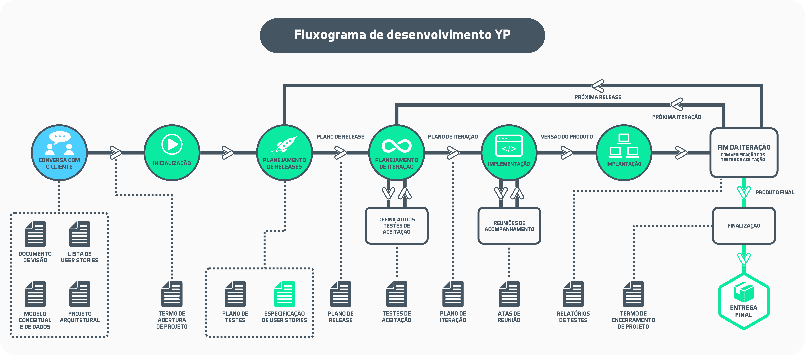

Laboratório de Banco de Dados e Engenharia de Software
Departamento de Computação e Tecnologia DCT/CERES/UFRN
O fluxo de desenvolvimento acadêmico utilizado no ensino é inspirado no easYProcess (desenvlvido na UFCG). O processo foi adaptado e atualizado para o ensino integrado em várias disciplinas do curso de Sistemas de Informação.

Lista de Documentos Modelo para Fluxo de Desenvolvimento.
Os principais interesses do laboratório são os temas: